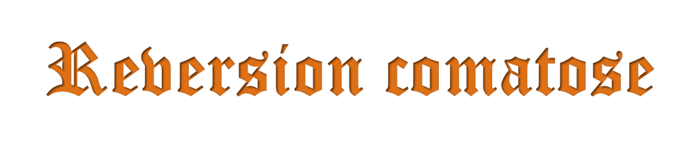
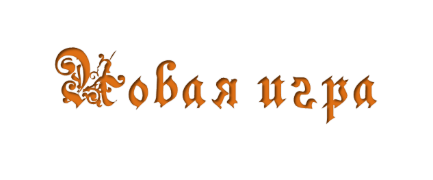
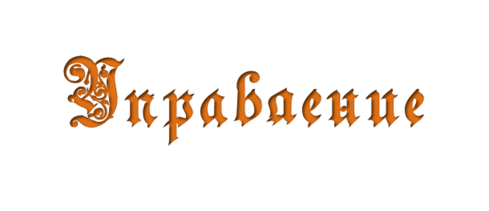
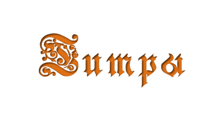

<!DOCTYPE html>
<html>
<head>
	<meta http-equiv="Content-Type" content="text/html; charset=utf-8">
	<meta name="viewport" content="width=800, height=400, initial-scale=1.0, maximum-scale=1.0, user-scalable=no;" />
	<title>Reversion comatose</title>
	<style type="text/css">
	.full{position: absolute;top: 0px;left: 0px; height: 100%; width:100%;}
	.full2{position: absolute;top: 0px;left: 0px; height: 100%;}
	.zero{position: absolute;top: 0px;left: 0px;}
	.menu{position: absolute; top: 40%;right: 1%;}
	.menu1{position: absolute; top: 55%;right: 1%;}
	.menu2{position: absolute; top: 70%;right: 1%;}
	 a img {
    border: none; /* Убираем рамку */
   }
		BODY { overflow-x: hidden; 
				overflow: hidden }
	</style>
	<script type="text/javascript" src="bin.js"></script>
	<script type="text/javascript" src="conf.js"></script>
	<script type="text/javascript">
	function timerx(){
	setTimeout("init()",11000)
	}

	function init(){
		//clearTimeout(setTimeout("init()",11000))
		//document.write(1)
		cls()
		text='<video autoplay loop="loop" class="full2"><source src="hud/menu.mp4" type='
		text=text+"'"
		text=text+'video/mp4; codecs="avc1.42E01E, mp4a.40.2"'
		text=text+"'></video>"
		add(text)
		add('<audio loop autoplay><source src="hud/menu.mp3" type="audio/mpeg">')

		add('')

		
		add('<a href="game.html"></a>')
		add('')
		add('')
		
	}
	</script>
</head>
<body bgcolor="BLACK" onload="timerx()">
	<video autoplay class="full">
	<source src="hud/vstudiohd.mp4" type='video/mp4; codecs="avc1.42E01E, mp4a.40.2"'></video>
</body>
</html>